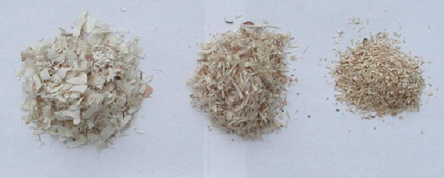
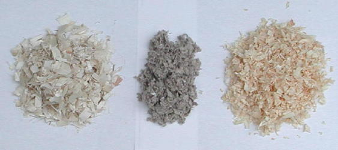
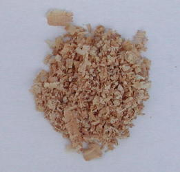

| What Beddings Are Popular? By Linda Price |
| Q What are the most popular beddings used in California? A There are a number of different beddings which club members use and which are considered safe. We'll look at the most common ones, but there are many new hybrid beddings available too. First, let's talk about the Aspen beddings. There are three main Aspen beddings available: shavings, shredded, or Sani-chips. |
| In the past, I have typically used Aspen shavings. Due the sensitivities of some of my animals, though, I have switched away from aspen. They have the largest flakes of shaved wood, but they also have smaller pieces mixed in. The smaller pieces generally fall to the bottom of the cage while the larger ones are gathered by the hamsters to make their nest. Shredded Aspen tends to have small but long pieces of wood. The hamsters can make nice, formed nests from shredded Aspen. Some packages of Aspen seem to have very stringy pieces of wood which could entangle a hamster limb. I do find that my winter whites in particular like to take my Aspen shavings and shred them so that they almost look like shredded Aspen. They are more prone to creating burrows and sleeping entirely under the shavings, and it appears that shredding it makes them better able to create their "structures" and build little tunnels. The Aspen Sani-chips are not as easy to find as the other forms of Aspen. Some of the local clubs here use it in their show boxes during shows. It makes a nice, flat flooring covering for easy animal viewing. The hamsters generally cannot burrow under it nor make much of a nest with it. Those who have used it as a main bedding say that it seems to find its way into every crack and crevice in their house. |
|  |
| Aspen Shavings, Shredded Aspen, and Aspen Sani-chips Note: Since this article was written, some concerns have surfaced about aspen beddings and are discussed at this link. |
|  |
| Aspen Shavings, Carefresh, and Pine Shavings |
| Carefresh is also a very popular bedding in California. It is a paper pulp product and generally comes in the gray color. The company does offer Ultra Carefresh which is white, but it is not readily available. It is also more expensive than the regular Carefresh. Those who use Carefresh say that it's generally more absorbent. Cages need to be cleaned less frequently, and spot cleaning is quite easy. Some colors of hamsters are less visible on this bedding, but the lighter colored hamsters are obviously more visible. Carefresh does tend to be more costly per cage cleaning, and you can mix Carefresh with one of the Aspen beddings. Pine Shavings are included to the right of this picture. In the past, Pine has been the most available and the cheapest bedding. Few fanciers will use it anymore, though, due to the fact that recent research indicates that it is less healthy for rodents. It is still readily available in pet stores and will often have pictures of rodents on the packaging. Until further research is done on the effect of Pine on hamsters, it's unsure how safe it is. |
|  |
| Cedar Shavings should always be avoided with hamsters. I've seen a number of cases of hamsters on Cedar who have lost all of their fur on their faces exposing red, irritated skin. Once they were taken off Cedar, their symptoms disappeared. Hamsters just cannot tolerate the oils in Cedar, and you should avoid it. If a package is not clearly labeled, be suspicious of Cedar. Many companies still use pictures of rodents on their Cedar packaging. Avoid any shavings that have a smell and may potentially be Cedar. |